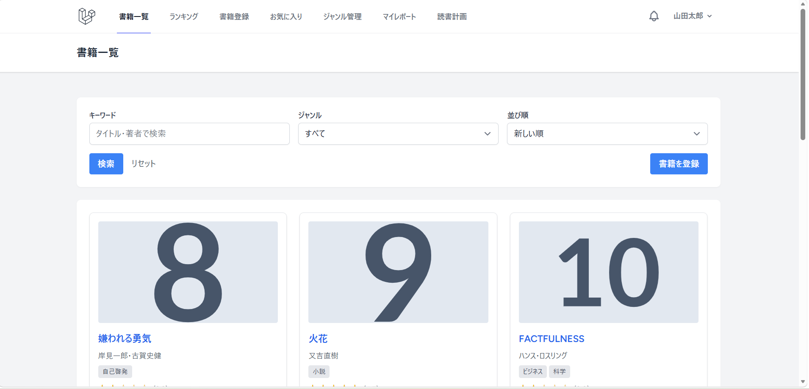
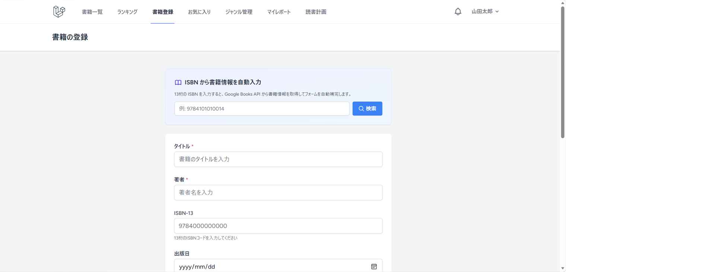
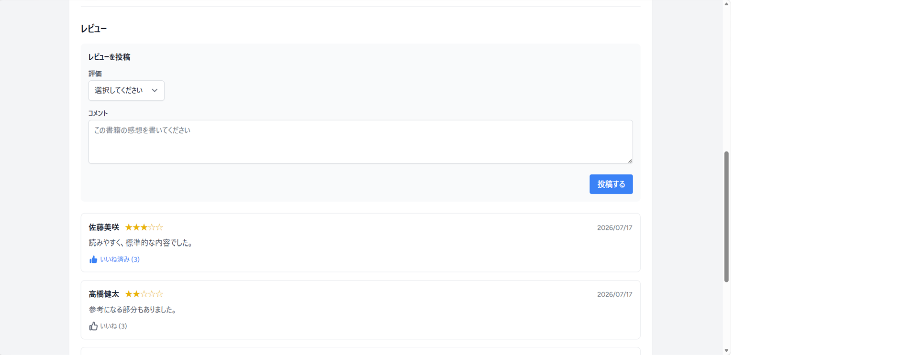
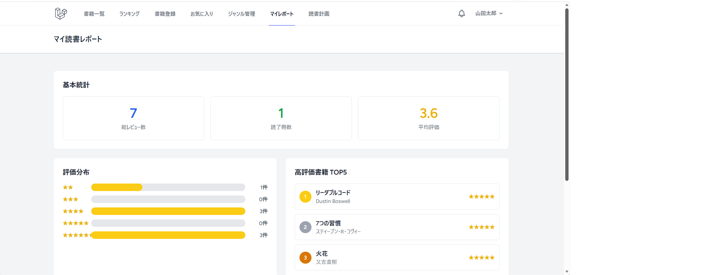
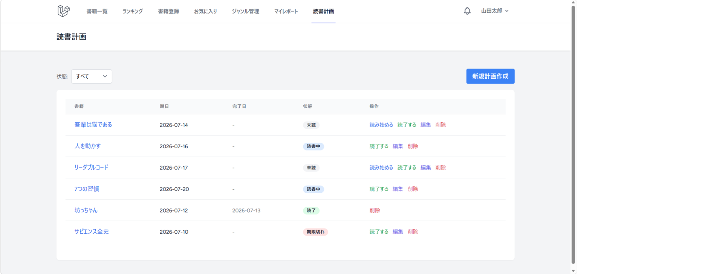

BookShelf App
Laravelを使用して開発した、書籍管理・読書記録アプリです。
ISBNを入力するとGoogle Books APIから書籍情報を取得し、 タイトル・著者・出版日などを登録フォームへ自動入力できる機能を実装しました。
レビュー投稿・星評価・いいね・お気に入り・ランキング・ジャンル管理・ 読書計画・読書レポートなど、 読書を継続しやすくするための機能を実装しています。
読書計画では、未読・読書中・読了・期限切れといった状態を管理できるようにしました。 また、Laravel Schedulerを利用したバッチ処理によって、 期限に応じた通知を自動生成する機能も実装しました。
マイ読書レポートでは、レビュー数・読了冊数・平均評価・評価分布・ 高評価書籍などを集計し、 利用者が自身の読書状況を振り返れるようにしています。
苦労した点・工夫した点
クライアント役の講師に仕様を確認しながら開発を進めたため、 要件が明確でない部分についてはヒアリングを行い、 認識をすり合わせながら設計・実装しました。
未設計の部分を自分だけで判断せず、 必要な質問を整理して確認することの難しさを経験し、 要件定義やコミュニケーションの重要性を学びました。
技術面では、Google Books APIとの連携、 書籍・ジャンル・レビュー・お気に入りなど複数テーブルのリレーション設計、 レビュー評価の集計処理に苦労しました。
また、Laravel Schedulerを用いた通知機能では、 期限判定や通知を発生させるタイミング、 同じ通知を重複して作成しないための処理などを検討しながら実装しました。





主な機能
- 会員登録・ログイン
- 書籍一覧・詳細表示
- 書籍登録・編集・削除
- Google Books APIによるISBN検索
- キーワード検索・ジャンル絞り込み
- レビュー投稿・編集・削除
- 星評価・レビューいいね
- お気に入り登録・解除
- ジャンル管理
- レビュー評価ランキング
- 読書計画・ステータス管理
- 読書レポート・統計表示
- Laravel Schedulerによる通知機能
- REST API
- Policyによる認可
- FormRequestによるバリデーション
- PHPUnitによるテスト
使用技術
- PHP
- Laravel 10
- Blade
- HTML
- CSS
- JavaScript
- MySQL 8
- Laravel Fortify
- Google Books API
- REST API
- Laravel Scheduler
- PHPUnit
使用環境・ツール
- Windows 11
- WSL2
- Docker
- Git
- GitHub
- Composer
- Vite
- Visual Studio Code
- ChatGPT
GitHub： bookshelf-app